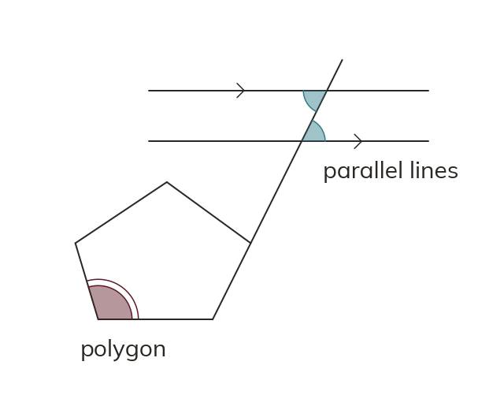

Combining the two angle worlds
Parallel-line rules still apply when a polygon is present. Use them only on angles the parallel lines form. Use polygon facts only on the polygon's own angles.
When a polygon's side lines are extended and cross a pair of parallel lines, the alternate and corresponding angle rules still apply exactly as they always have - a parallel-line diagram does not change those rules just because a polygon is also present. Use the parallel line facts ONLY on angles that are actually formed by the parallel lines (and the line crossing them); use the polygon's own angle facts (exterior sum interior sum on the polygon's own angles.